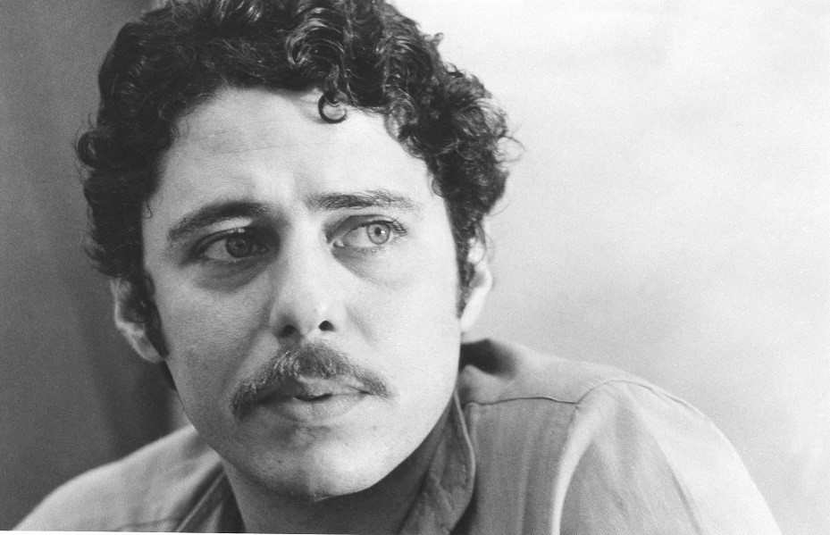

Francisco Buarque de Hollanda, mais conhecido como Chico Buarque (Rio de Janeiro, 19 de junho de 1944), é um músico, dramaturgo, escritor e ator brasileiro. É conhecido por ser um dos maiores nomes da música popular brasileira (MPB). Sua discografia conta com aproximadamente oitenta discos, entre eles discos-solo, em parceria com outros músicos e compactos.
